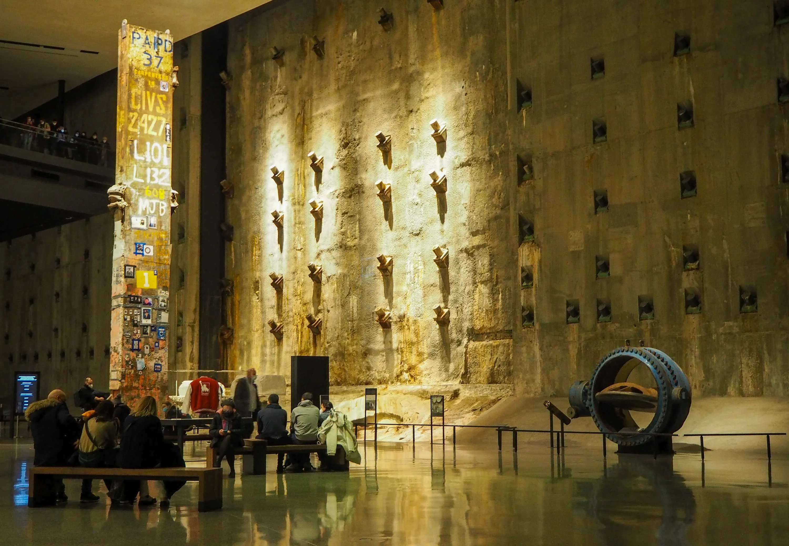
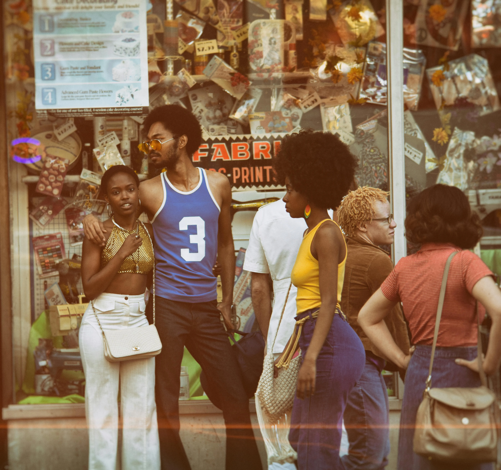

NYC Culture
Experience the vibrant cultural scene

Broadway
The pinnacle of American theater with world-class performances.

Museums
From the MET to MoMA, NYC houses some of the world's finest art collections.
Music
Jazz clubs, concert halls, and street performers create the city's soundtrack.

Neighborhoods
Each district has its own unique character and cultural identity.
Street Art
Murals and graffiti transform the city into an open-air gallery.
Festivals
Year-round celebrations of food, film, music, and more.